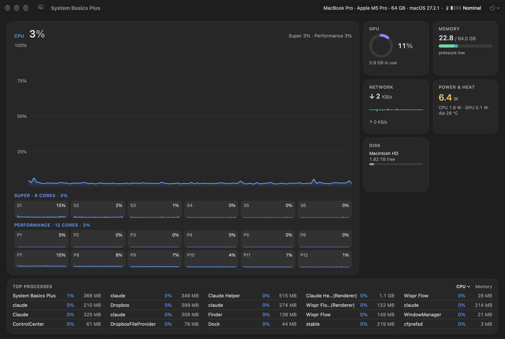
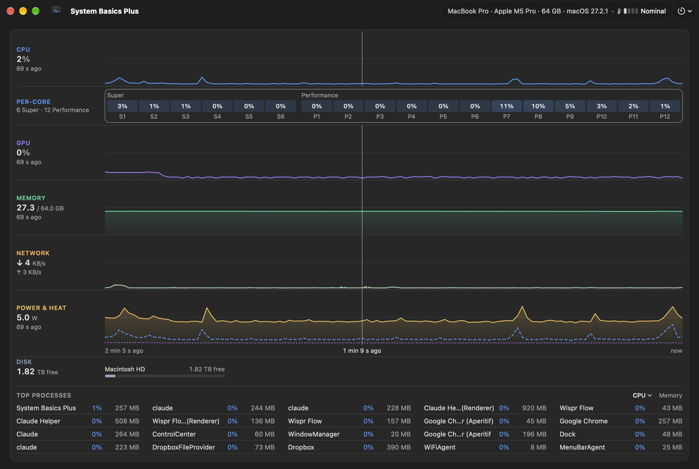
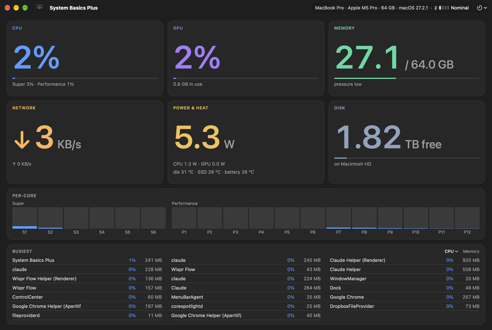
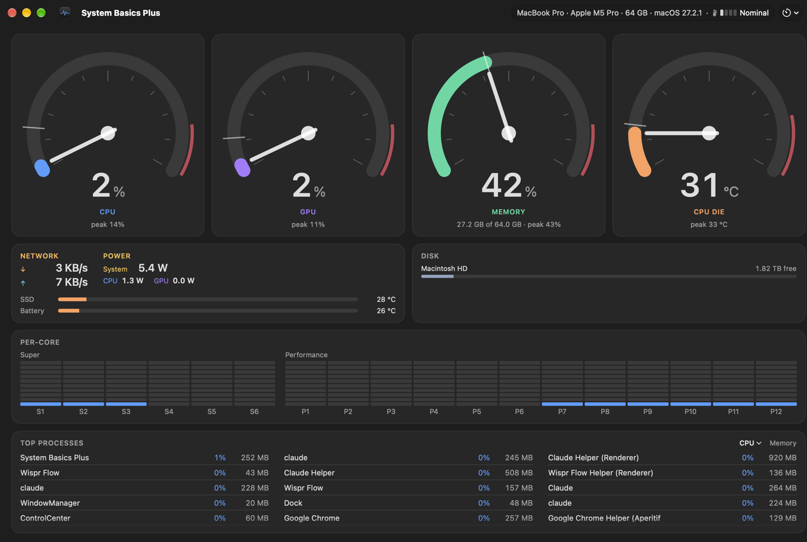
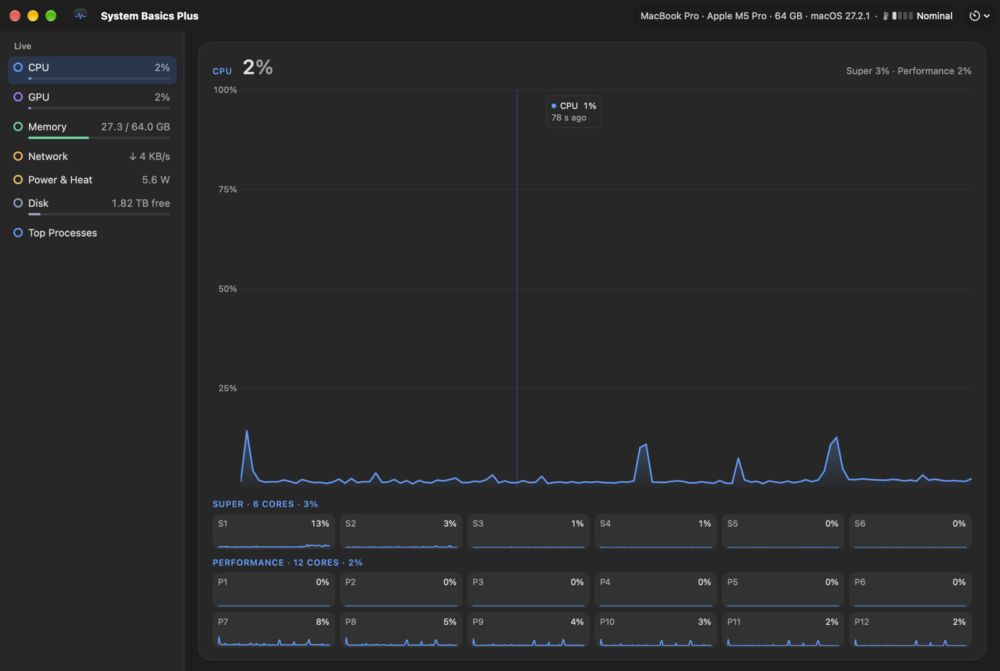
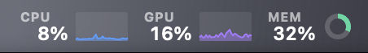
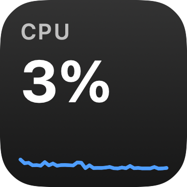

System Basics Plus
System Basics Plus
A small, quiet system monitor for the Mac. Nothing fancy. Live readings for CPU, GPU, memory, network, temperature and power, in a window with seven layouts to choose from, in the menu bar and on the Dock icon. Nothing else: no accounts, no ads, and nothing leaves your Mac. There are far more comprehensive apps available for tracking system stats. I wanted a simpler version so I made my own.

New in 0.2.2: quit a process from any process list, and a note in This Mac when a macOS update is waiting. New in 0.2.1: Cards is back as the layout the app opens with; Bento's tiles can be resized, moved and restyled; temperatures in °C or °F; and ⌘1 to ⌘7 switch layouts.
Install
Requires macOS 15 (Sequoia) or later.
brew trust --cask tcrowson/tap/system-basics
brew install --cask tcrowson/tap/system-basicsHomebrew 6 and later asks you to trust a third-party cask before installing it; brew trust tcrowson/tap trusts all of these apps at once.
Update
brew update
brew upgrade --cask system-basicsbrew update fetches the list of new versions; without it, Homebrew may not see the latest release yet. Quit and reopen System Basics Plus afterward to run the new version.
Uninstall
brew uninstall --cask system-basicsTo also remove its settings:
brew uninstall --zap --cask system-basicsFeatures
The window
- Seven layouts: the same readings drawn seven ways. Pick one in Settings ▸ General or View ▸ Layout, or press ⌘1 to ⌘7; switching is instant and keeps the history.
- Your choice of metrics: CPU, Per-core, GPU, Memory, Network, Thermal, Power, Disk and Top Processes. Switch any of them off in Settings ▸ Metrics and it leaves every layout, the menu bar and the Dock, and stops being measured.
- Fits any size: every layout reflows from a narrow strip to a full screen and uses the height it is given.
- This Mac: the model, chip, memory, macOS version and thermal level in the title bar; click it for uptime, startup disk, displays, battery health, and whether a macOS update is waiting. Choose the facts in Settings ▸ System Info.
- Per-core: every core, grouped by core type, using the names your chip reports.
- Top Processes: your 20 busiest processes by CPU or memory, including the work of short-lived helper processes such as compilers. Point at a row and click its ✕ to quit that process; the app asks first.
The layouts







In Hero & Satellites, each tile can also show its metric as text, a graph, a bar or a ring: use the ··· button on the tile.
The menu bar

- One menu bar item, your readouts: choose any of CPU, GPU, Memory, Network and Temperature, in the order you like.
- A style per readout: text, history graph, bar, per-core bars (CPU), ring (memory), or up/down rates and graph (network).
- Tinted or monochrome: tinted uses a color per metric; monochrome matches the menu bar's own icons on any wallpaper.
- Turns red past a limit: CPU or GPU above 90%, memory above 85%, temperature above 85 °C.
- Click for the menu: choose which readouts show, open the window, set the refresh rate or open Settings.


Light on resources
- Measures only what is on screen, slows down when the window is hidden, and pauses when nothing is showing.
- Refresh every 0.5, 1, 2 or 5 seconds; keep 60 to 600 samples of history.
- Follows your Mac's light and dark appearance, and its Region setting for °C or °F (or choose one in Settings ▸ General).
FAQ
Does it collect any data?
No. It has no network code at all: every reading stays on your Mac.
Why don't I see every process in Top Processes?
macOS only lets regular apps read your own processes. System services that run as root are not listed.
Which Macs does it support?
macOS 15 or later. It has been developed and tested on Apple silicon; temperature and power sensors differ between chips, and a reading the Mac doesn't provide is simply left out.